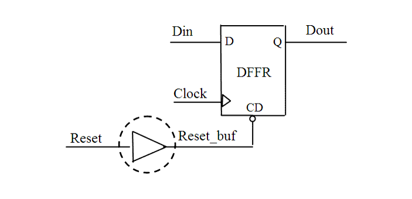

| Description | This rule fires when Leda detects a buffer on a reset path. Such buffers can cause problems with timing delays on the reset path. You can activate this rule to double check the reset path and improve reset tree timing analysis. |
| Policy | DESIGN |
| Ruleset | RESETS |
| Language | VHDL/Verilog |
| Type | Hardware |
| Severity | Error |
This is an example of invalid Verilog code, followed by a circuit diagram that illustrates the problem:
module ntl_rst12_top;
...
wire Reset_buf;
GTECH_BUF u1(.A(Reset), .Z(Reset_buf));
// NTL_RST12 fires -- buffer on reset path
always @(posedge Clock)
begin
if (!Reset_buf)
Dout <= 0;
else Dout <= Din;
end
endmodule
